An AI-native customer support platform
Text and voice conversations, answers grounded in your knowledge, authorized actions, and a human whenever it matters.
Vision and users
What we are building, for whom, and the principles we will not trade away.
Complete conversations, not just chatbot replies
Conduct complete, context-aware customer conversations over text and voice, answer from trusted business knowledge, perform explicitly authorized actions, and transfer to humans when appropriate.
Faster correct answers
Reduce time to a correct answer for repetitive requests.
Humans stay one step away
Resolve routine work without ever removing access to people.
Auditable AI
Every action is permission-controlled and recorded.
Five kinds of people
Customer
Asks questions or requests an action.
Support agent
Reviews, takes over, resolves.
Support lead
Queues, policies, reporting, quality.
Org admin
Channels, knowledge, agents, integrations, access.
Platform operator
Reliability, cost, abuse, health.
Eight principles
Success measures
- Correct-answer rate on a curated evaluation set, and groundedness
- Task completion rate, human escalation rate segmented by reason
- Median and p95 response latency, tool success rate
- Customer satisfaction and cost per resolved conversation
- Availability and message-delivery success
The customer experience
One conversation that can switch between text, voice and a person.
From question to resolution
History survives channel changes where identity can be safely linked.
What each person can do
Customer
- Ask a question
- Check an order
- Ask for a human
- Talk by voice
Support agent
- See the queue
- Take over with context
- Resolve, create tickets
Admin
- Configure agent and channels
- Upload knowledge
- Manage users and tools
Lead and operator
- Routing and SLA
- Quality and reports
- Health, cost, abuse
First release and what waits
In the MVP (text)
- Organization and access foundation
- Website text chat
- Knowledge ingestion and retrieval
- AI orchestration with grounded answers
- One read-only business tool
- Human handoff and inbox, basic tickets
- Audit, logs, metrics, traces, usage
Later
- Real-time browser voice (STT/TTS or speech-to-speech)
- Email and messaging channels
- Workflow builder, routing, SLA
- More connectors and write-capable tools
- Advanced analytics, evaluation, billing, governance
Explicit non-goals for the first milestone
- Replacing every existing CRM or helpdesk
- Arbitrary autonomous changes to customer accounts
- Unreviewed financial transactions
- Supporting every channel and provider at launch
- Training a foundation model
- Splitting every module into a microservice
Architecture
A modular monolith with strict module boundaries, ready to split only when it pays off.
The system in context
Modular monolith first
- One deployment, strict module packages and interfaces
- Relational database for transactional state
- Queue and worker for retryable, slow work
- Vector search and object storage behind adapters
- Extract a service only for independent scaling, fault isolation or deploy cadence. Voice streaming is the likely first candidate.
Five domains
Customer interaction
M01 Conversation
M02 Channels
M03 Customer identity
AI and voice
M04 AI engine
M05 Knowledge and RAG
M06 Tools and actions
M07 Voice sessions
M08 Speech
M09 Transcript sync
Support operations
M10 Human inbox
M11 Tickets
M12 Workflows
M13 Routing and SLA
M14 Notifications
Integrations and insight
M15 Integration hub
M16 Analytics
M17 AI evaluation
Platform
M18 Orgs, users, access
M19 Agent configuration
M20 Security, audit, telemetry, usage
How modules depend on each other
Architecture constraints
- The core domain never depends on one LLM or messaging vendor
- Every request and job carries a trace id and tenant context
- Durable state is committed before a webhook is acknowledged
- Never hold a database transaction open while waiting for an LLM or provider
- Streaming tokens or audio are not the same as a committed final message
The AI conversation engine
One turn at a time: understand, retrieve, act, answer, and know when to stop.
Four phases
The turn as a state machine

AI proposes. Code disposes.
The model may
- Interpret intent
- Suggest a tool call
- Draft a reply from evidence
The application enforces
- Tool allowlist per agent version
- Argument schemas
- Tenant and customer authorization
- Approval for sensitive actions
Never
- Trust identity claims from the model
- Run model-generated code
- Say an action succeeded before the tool confirms it
What the model is allowed to trust
When we hand over to a person
Agents are versioned and released like software
Knowledge and retrieval
Answers come from organization-approved sources, with citations, scoped to the tenant.
From file to searchable knowledge
Tenant filter is mandatory
- Every search carries tenant and allowed-source filters. There is no unfiltered path.
- Results are thresholded, deduplicated and returned with source ids and versions.
- Deleting a source removes it from retrieval immediately, then from the index, storage and caches.
- A cross-tenant retrieval test runs in CI.
Grounded, or clearly not
Evidence is good
- Answer from the passages only
- Cite the sources
- Separate policy text from live data
Evidence is missing or conflicting
- Say it is not found, never imply a source
- Ask a clarifying question
- Offer a ticket or a human
Integrations and business tools
How the AI reaches business systems safely: tool contracts, authorization, connectors, webhooks and channels.
Three layers between the AI and a business system
A tool is a contract
{
"name": "orders.lookup",
"version": 1,
"risk": "read_only",
"input_schema": {
"type": "object",
"properties": {
"order_reference": { "type": "string",
"minLength": 3, "maxLength": 80 }
},
"required": ["order_reference"],
"additionalProperties": false
},
"output_schema": {
"required": ["status", "estimated_delivery"]
}
}- Stable name and version
- Input and output JSON schemas
- Risk level and required permission
- Timeout, retry, idempotency
- Audit and redaction policy
- Allowed agents and tenants
Five gates, enforced in code
Any "no" stops the call, writes an audit record and returns a typed denial.
How much care each tool needs
| Level | Example | Control |
|---|---|---|
| Read only | Order status lookup | Schema, allowlist, customer verification, audit |
| Reversible write | Cancel a pending subscription | Customer confirmation, idempotency key, audit |
| Sensitive write | Change address or issue refund | Human approval, idempotency, full audit |
First release: exactly one read-only tool.
What the tool service does
Happy path
- Record the execution with its idempotency key
- Call the connector with a timeout, no open DB transaction
- Validate the output schema and redact
- Store the result and an audit event
- Return a minimal typed result to the AI
When it goes wrong
- Read times out: retry with backoff
- Write times out: mark
unknown, look up status or send to review - The AI must not claim success until the tool confirms it
Retry only what is safe
Retry with backoff
RATE_LIMITEDPROVIDER_UNAVAILABLETIMEOUTon a read
Bounded attempts, jitter, then dead-letter.
Never retry blindly
TIMEOUTon a write becomesUNKNOWN_OUTCOME
Look up the status by idempotency key, or send to human review.
Not retryable
AUTHENTICATION_FAILEDAUTHORIZATION_DENIEDVALIDATION_FAILED,NOT_FOUND,CONFLICT
Webhooks: accept durably, process later
A replayed event returns success without creating a second message.
Messages out: delivery you can reason about
Exactly-once effects with at-least-once delivery

Adapters keep the core clean
Configuring an integration safely
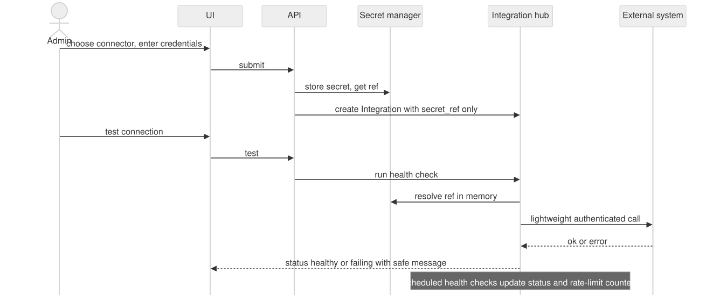
Integration health
- Scheduled health checks and rate-limit counters
- Circuit breaker stops calling a failing system
- Tools backed by an unhealthy integration are blocked from enabling
- Credentials rotate and revoke without redeploys
One customer, more than one channel
Known identity
Resolve the existing customer and continue the conversation.
Verified proof
One-time code or signed-in link: link the identity, record consent, reuse the open conversation if policy allows.
No proof
Treat as a separate customer. No access to protected data.
A phone number or email alone is never proof of account ownership.
Integration path
Voice and multimodal
Real-time browser voice on the same engine and the same authorization model.
Two ways to build voice
A · Modular pipeline
audio → STT → engine → TTS → audio
- Explicit transcript
- Choose providers per stage
- Easier to inspect
Trade-off: more latency and orchestration.
B · Speech to speech
audio ↔ realtime model
- More natural, lower latency
- Tools still go through our authorization
Trade-off: provider coupling, less control.
Start with one. Do not build both fully before validating the product.
Option A in motion
A voice session
Interrupting the assistant
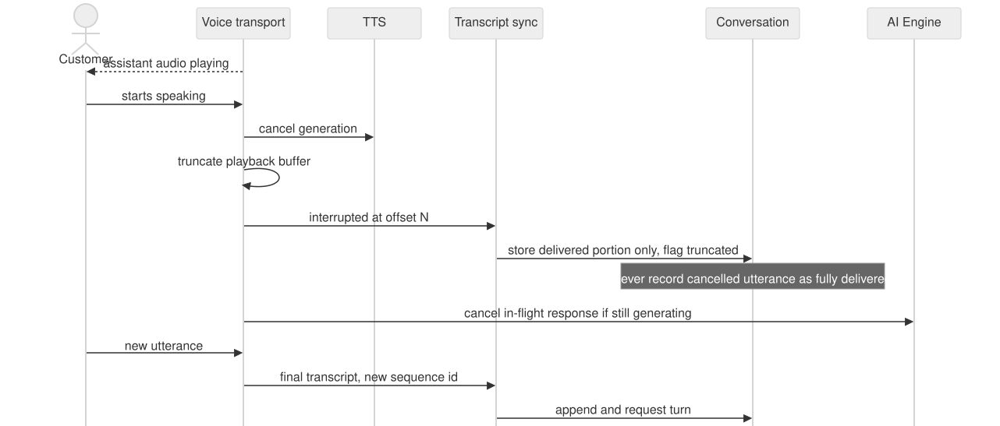
Text, voice, text again
Voice is opt-in and visible
- Request the microphone only when voice starts
- Always show that voice is active, and whether it is transcribed or kept
- Audio and transcript retention are defined separately
- No raw audio stored by default
- Deletion, access and consent workflows per policy
Humans and operations
Handoff with context, tickets for lasting work, and rules that route and measure it.
The agent never starts cold
What happened
- Transcript and summary
- Customer intent and unresolved question
What we know
- Verification level
- Sources already cited
- Tool results, successes and failures
What to watch
- Ticket and SLA state
- Current modality
- Restricted data masked by agent permission
Who owns the conversation
Handoff in practice
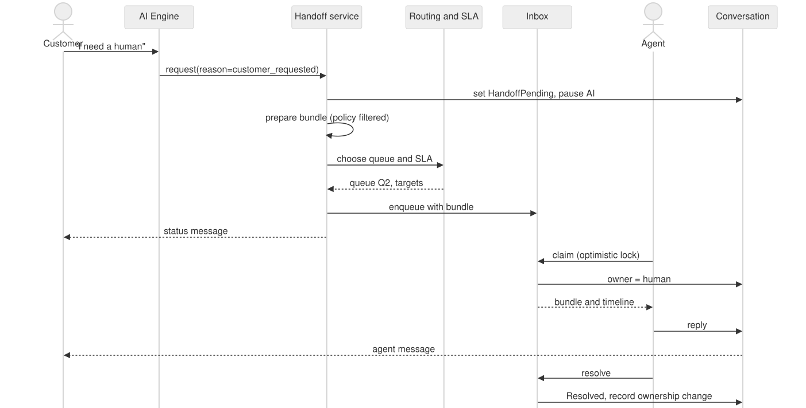
Conversations and tickets are different things
Conversation
A record of an interaction. Text, voice and handoffs live in its timeline.
Ticket
A work item to resolve. One ticket can link several conversations and keeps its own status history.
Rules that scale operations
Routing
Deterministic rules by priority, with a default queue.
SLA
Response and resolution targets, business hours, escalation.
Workflows
Versioned, retry-safe procedures. AI proposes, the workflow enforces.
Trust: security, privacy, reliability
Built into the design, tested in CI, and measured in production.
Tenant isolation, everywhere
A prompt injection that goes nowhere

What is kept, where, for how long
Secrets
- Secret manager, referenced by id
- Never in prompts, logs or traces
- Rotation and revocation supported
Data
- Retention per class: messages, transcripts, audio, files, logs, audit
- Synthetic or redacted data in tests and evaluations
- Access and deletion workflows
Eight habits
When a dependency is down
AI provider
Tell the customer about the temporary problem, or route to a human.
Retrieval
Never pretend an answer is grounded. Ask a question or hand off.
A business tool
Explain the limit and offer a person or a ticket. Circuit breaker stops repeated calls.
Every case emits a failure metric and an audit event.
Quality, observability and evaluation
Measure resolution quality, and gate every agent release on evidence.
What we watch
Platform
Request rate, errors, latency, queue depth, worker failures
Conversation
Inbound latency, delivery success, duplicates, handoffs
AI and RAG
Model latency and cost, empty retrieval, tool success
Voice
Time to first audio, turn latency, interruptions, drops
Correlation ids connect API, worker, model, retrieval and tools. No message text or personal data in metric labels.
Test what actually goes wrong
- Common FAQs
- Ambiguous or incomplete questions
- Stale or conflicting documents
- Prompt injection attempts
- Requests for restricted data
- Tool success and tool failure
- Provider timeouts
- Customer asks for a human
- Language switching
- Interruptions and transcript errors
- Deterministic checks for permissions, schemas, state
- Model judges as one signal only
A new agent version ships only when
- Critical safety tests pass
- Tool authorization tests pass
- Regression quality is within thresholds
- Latency and cost are measured
- The rollback path is known
- A versioned release record exists
Data model
Ten aggregates around one tenant boundary.
Data model
Data modeling rules
- Every tenant-owned row reachable through a trusted organization id
- Internal UUIDs. Provider ids kept separately and scoped to the connection
- Immutable version rows for agents, documents, workflows and tools
- Messages, transcripts, audio and attachments kept distinct for different retention
- Store decision metadata and sources, never hidden chain-of-thought
Roadmap and demo
What ships first, and what the first demo shows.
Roadmap
Text support MVP
Website chat, grounded answers, one read-only tool, handoff, tickets, audit.
Voice MVP
Browser voice, speech, transcript sync, interruption, voice handoff.
Operations
Channels, workflows, routing and SLA, connectors, evaluation, usage.
A website assistant that can
- Accept a customer text message
- Maintain a conversation
- Retrieve organization knowledge
- Invoke one safe, read-only business tool
- Answer with source-grounded information
- Escalate to a human, preserving context
- Emit audit and observability events
Demo, part 1: a message arrives
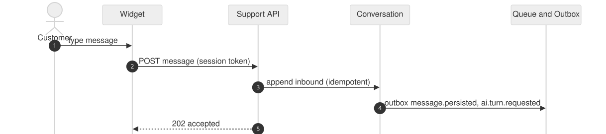
Demo, part 2: the AI turn
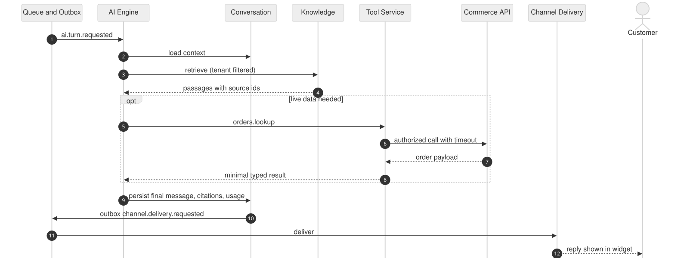
Thank you
More: scrum.html for how we will deliver it, technologies.html for the technologies, engineering.html for how it is built.
Full detail: rapport.pdf